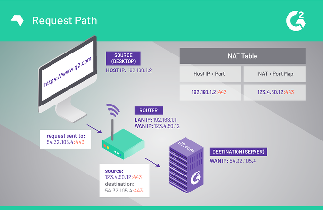
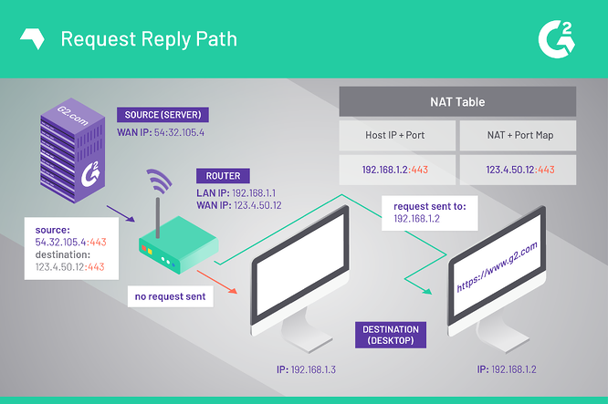
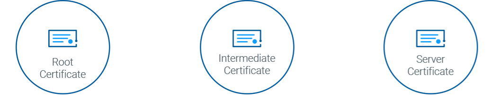
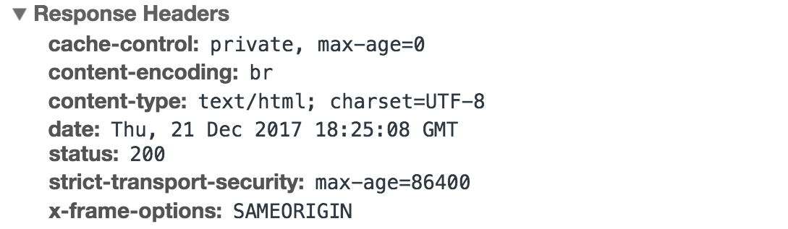

Internal Links
Material
- Autonomous System (AS) & autonomous system number (ASN)
- AS stands for Autonomous System. An Autonomous System is a collection of IP networks that are under the control of a single administrative entity or organization. These networks share a common routing policy and are identified by a unique Autonomous System Number (ASN).
- Peering Relationships: ASs establish peering relationships with other ASs to exchange traffic directly and efficiently. Peering allows networks to avoid using transit providers and directly exchange traffic at Internet Exchange Points (IXPs) or through private interconnections.
- Internet Backbone: ASs collectively form the backbone of the Internet, facilitating the global connectivity and exchange of data between networks and organizations worldwide.
- ASN is a unique number assigned to an autonomous system (AS) by the Internet Assigned Numbers Authority (IANA).
- ASNs are used in conjunction with the Border Gateway Protocol (BGP) to facilitate the exchange of routing information between different autonomous systems. Each AS is assigned a globally unique ASN, which is used to identify and differentiate it from other autonomous systems.
- An AS consists of blocks of IP addresses which have a distinctly defined policy for accessing external networks and are administered by a single organization but may be made up of several operators.
- Border Gateway Protocol (BGP)
- Border Gateway Protocol is a standardized exterior gateway protocol designed to exchange routing and reachability information among autonomous systems on the Internet.
- BGP (Border Gateway Protocol) is the primary routing protocol used on the Internet. It enables the exchange of routing information between autonomous systems (ASes) to facilitate the routing of traffic across different networks. BGP plays a critical role in determining the best paths for data packets to reach their destinations.
- BGP works by exchanging routing updates between BGP routers. Each BGP router maintains a routing table that contains information about the networks that it can reach. When a BGP router receives a routing update, it updates its routing table with the new information. BGP routers then use their routing tables to decide how to route traffic.
- BGP is a complex protocol, and there are a number of different factors that BGP routers consider when making routing decisions. These factors include:
- The path to the destination network
- The cost of the path
- The policies of the AS
- Multi-homed AS vs. transit AS
- Multi-homed AS and transit AS are two different types of autonomous systems (AS) based on their connectivity and relationship with other networks:
- Multi-homed AS: A multi-homed AS is an autonomous system that has connections to multiple upstream service providers (transit providers) for Internet connectivity. Multi-homed ASs use these multiple connections to achieve redundancy, load balancing, and increased reliability.
- Key points about multi-homed AS:
- Multiple Upstream Providers: A multi-homed AS has direct connections to two or more transit providers to access the Internet. These transit providers provide the AS with full Internet routing tables and enable the AS to exchange traffic with networks beyond its own connections.
- Redundancy and Load Balancing: By having multiple upstream connections, a multi-homed AS can ensure redundancy in case one of the providers experiences a network outage or performance issues. It can also distribute incoming and outgoing traffic across the multiple connections for load balancing purposes.
- Improved Reliability: Multi-homing helps improve network reliability and resilience as the AS can maintain connectivity even if one of the upstream providers becomes unavailable.
- Limited Route Control: Multi-homed ASs typically have limited control over the routing of their traffic beyond their direct connections to the upstream providers. They rely on the transit providers for exchanging routing information and determining the best paths for their traffic beyond their immediate connections.
- Transit AS: A transit AS, also known as a transit provider, is an autonomous system that provides network connectivity to other autonomous systems. Transit ASs act as intermediaries and provide transit services to allow traffic from one AS to reach other networks on the Internet.
- Key points about transit AS:
- Connectivity Provider: A transit AS provides connectivity services to other ASs that do not have direct connections to multiple upstream providers. The transit AS acts as an intermediary, accepting traffic from its connected ASs and forwarding it to other networks or ASs beyond its own network.
- Full Routing Tables: Transit ASs maintain full Internet routing tables and are responsible for exchanging routing information with other ASs. They make routing decisions based on the best paths to reach various destinations on the Internet.
- Peering and Settlements: Transit ASs establish peering relationships with other ASs to efficiently exchange traffic. They negotiate peering agreements and may engage in settlement agreements to ensure fair compensation for the traffic they carry on behalf of other ASs.
- Greater Route Control: Transit ASs have more control over routing decisions compared to multi-homed ASs. They have the ability to influence traffic paths and implement routing policies based on their own network's requirements and agreements with connected ASs.
- IXP (Internet Exchange Point) (aka NAP)
- a physical location through which Internet infrastructure companies such as Internet Service Providers (ISPs) and CDNs connect with each other. These locations exist on the “edge” of different networks, and allow network providers to share transit outside their own network. By having a presence inside of an IXP location, companies are able to shorten their path to the transit coming from other participating networks, thereby reducing latency, improving round-trip time, and potentially reducing costs.
- an internet exchange is essentially a local area network that connects networks instead of user devices. Organizations join internet exchanges in order to control data traffic routing. they don't want to let the internet decide how to route their content, they don't want to pay one big carrier to handle all their traffic. an internet exchange is a marketplace where participating networks agree to hand traffic off to each other in a process called peering governed by peering agreements, usually contracted on a cost neutral basis. In an internet exchange you can reach thousands of companies networks and clouds via the shortest path. You improve user experience and network performance with lower latency and higher bandwidth. you increase protection and resilience of data flow, you are safe from ddos attacks, you reduce costs, and add flexibility and worldwide coverage
- At its core, an IXP is essentially one or more physical locations containing network switches that route traffic between the different members networks. Via various methods, these networks share the costs of maintaining the physical infrastructure and associated services. Similar to how costs are accrued when shipping cargo through third-party locations such as via the Panama Canal, when traffic is transferred across different networks, sometimes those networks charge money for the delivery. To avoid these costs and other drawbacks associated with sending their traffic across a third-party network, member companies connect with each other via IXP to cut down on costs and reduce latency.
- IXPs are large Layer 2 LANs (of the OSI network model) that are built with one or many Ethernet switches interconnected together across one or more physical buildings. An IXP is no different in basic concept to a home network, with the only real difference being scale. IXPs can range from 100s of Megabits/second to many Terabits/second of exchanged traffic. Independent of size, their primary goal is to make sure that many networks’ routers are connected together cleanly and efficiently. In comparison, at home someone would normally only have one router and many computers or mobile devices.
- Networks talk between each other using the BGP. This protocol allows networks to cleanly delineate between their internal requirements and their network-edge configurations. All peering at IXPs uses BGP.
- ISP
- An Internet service provider (ISP) is an organization that provides services for accessing, using, or participating in the Internet
- Content Delivery Network (CDN)
- a geographically distributed network of proxy servers and their data centers. The goal is to provide high availability and performance by distributing the service spatially relative to end users. CDNs came into existence in the late 1990s as a means for alleviating the performance bottlenecks of the Internetas the Internet was starting to become a mission-critical medium for people and enterprises. Since then, CDNs have grown to serve a large portion of the Internet content today, including web objects (text, graphics and scripts), downloadable objects (media files, software, documents), applications (e-commerce, portals), live streaming media, on-demand streaming media, and social media sites.
- PoP (Points of Presence) - servers that are placed at the center of high-density Internet Exchange Points around the world. PoP is primarily strategically located data centers, containing numerous caching servers that use techniques like SSD storage, GZip compression to optimize file storage and content delivery.
- How it works is the following – when someone accesses website content that is hosted on a CDN, the request will travel to a POP that is nearest to that person, rather than going back to the origin server.
- a CDN stores a cached version of its content in multiple geographical locations (a.k.a., points of presence, or PoPs). Each PoP contains a number of caching servers responsible for content delivery to visitors within its proximity.
- Origin server
- Cache hit/miss rates
- There are two terms used to characterize the cache efficiency of a program: the cache hit rate and the cache miss rate.
- OSPF
- OSPF (Open Shortest Path First) is a routing protocol used in computer networks to determine the best paths for forwarding network traffic. It is an Interior Gateway Protocol (IGP) commonly used within autonomous systems (AS) to exchange routing information and calculate routes based on metrics such as link cost.
- Key features and characteristics of OSPF include:
- Link-State Protocol: OSPF is a link-state protocol, which means routers in the network exchange information about the state and cost of their links with neighboring routers. This information is used to build a detailed and synchronized view of the network topology.
- Dijkstra's Shortest Path First Algorithm: OSPF uses Dijkstra's algorithm to calculate the shortest path between routers based on the accumulated link costs. It selects the paths with the lowest total cost as the preferred routes for forwarding traffic.
- Hierarchical Design: OSPF supports a hierarchical network design by dividing the network into areas. Each area has its own link-state database, reducing the size and complexity of routing tables and enhancing scalability.
- Fast Convergence: OSPF is designed for fast convergence, enabling routers to quickly adapt to network topology changes by exchanging incremental updates rather than flooding the entire network with routing information.
- Support for Multiple Metrics: OSPF allows the use of multiple metrics, such as bandwidth, delay, or reliability, to calculate path costs. This flexibility enables administrators to prioritize certain characteristics or constraints in their network design.
- Authentication and Security: OSPF supports authentication mechanisms to ensure the integrity and security of routing information exchanged between routers.
- Subnet
- IPv6
- Generic Routing Encapsulation (GRE)
- A tunneling protocol developed by Cisco Systems that can encapsulate a wide variety of network layer protocols inside virtual point-to-point links or point-to-multipoint links over an Internet Protocol network
- GRE stands for Generic Routing Encapsulation. It is a tunneling protocol used in computer networking to encapsulate and transport various network layer protocols over an IP network.
- Key points about GRE:
- Tunneling Protocol: GRE is primarily used for creating virtual private network (VPN) tunnels or encapsulating network traffic within an IP network. It allows the transmission of protocols that are not natively supported by the underlying network.
- Protocol Agnostic: GRE is considered "generic" because it can encapsulate any network layer protocol, including IPv4, IPv6, IPX, and others. It operates at the network layer of the OSI model, providing a transparent way to encapsulate and transport various protocols.
- Encapsulation Process: When a packet needs to be transported using GRE, it is encapsulated by adding a GRE header to the original packet. This GRE header includes information such as the source and destination IP addresses, protocol type, and other optional fields.
- Tunnel Endpoints: GRE tunnels have two endpoints: the source and destination endpoints. The source endpoint encapsulates the original packet with the GRE header, while the destination endpoint receives the encapsulated packet, removes the GRE header, and forwards the original packet to its intended destination.
- Transport over IP Networks: GRE tunnels use IP as the underlying transport protocol. This means that the encapsulated GRE packets are carried over an IP network, such as the Internet or an enterprise network, using standard IP routing mechanisms.
- Flexible and Extensible: GRE is a flexible and extensible protocol that allows for the creation of point-to-point or multipoint tunnels, supports various encryption and authentication mechanisms, and can be used in combination with other networking technologies like IPsec for enhanced security.
- GRE encapsulates data packets and redirects them to a device that de-encapsulates them and routes them to their final destination. This allows the source and destination switches to operate as if they have a virtual point-to-point connection with each other (because the outer header applied by GRE is transparent to the encapsulated payload packet). For example, GRE tunnels allow routing protocols such as RIP and OSPF to forward data packets from one switch to another switch across the Internet. In addition, GRE tunnels can encapsulate multicast data streams for transmission over the Internet.
- Example uses
- In mobility protocols.
- In A8/A10 interfaces to encapsulate IP data to/from Packet Control Function (PCF).
- Distributed denial of service (DDoS) protected appliance to an unprotected endpoint
- NAT (Network Address Translation)


- NAT (Network Address Translation) is a technique used by routers to allow devices on a private network to communicate with the Internet using a single public IP address. It works by mapping the private IP addresses of devices on the internal network to a single public IP address on the router's WAN (Wide Area Network) interface.
- When a device on the internal network initiates a connection to a device on the Internet, the router intercepts the connection request and replaces the source IP address of the internal device with its own public IP address. This process is known as source NAT (SNAT).
- When a device on the Internet initiates a connection to a device on the internal network, the router intercepts the incoming connection request and looks up the NAT table to find the correct internal IP address and port. This process is known as destination NAT (DNAT).
- URIs, URLs, and URNs
.png)
- URI identifies a resource and differentiates it from others by using a name, location, or both.
- URI is usually used in XML, tag library files, and other files, such as JSTL and XSTL.
- An example of a URI is ISBN 0-476-35557-4.
- Diffrences:
- a URI can be just a name by itself (like google.com) or a name combined with a protocol for how to get there (like https://)—while a URL is always a name combined with a protocol (https://google.com).
- In other words, URIs are identifiers, and URLs are identifiers that also tell you how to reach them!
- google.com …is a URI because it is only the name of a resource
- https://google.com …is a URL because it’s both the name and the way to get there
- URL
- URL identifies the web address or location of a unique resource.
- URL is mainly for searching web pages on the internet.
- An example of a URL would be https://hostinger.com.
- JSON RPC queries
- A lightweight remote procedure call protocol encoded in JSON (JavaScript Object Notation). It enables communication between a client and a server over a network by sending JSON-encoded requests and receiving JSON-encoded responses.
- Both REST and JSON-RPC have their own strengths and use cases. REST is widely adopted and suits scenarios where resource-oriented interactions are required, providing a flexible and standardized approach. JSON-RPC, on the other hand, is more suitable for situations where direct method invocations and remote procedure calls are needed, emphasizing simplicity and efficiency.
- CSS
- Cascading Style Sheets is a style sheet language used for describing the presentation of a document written in a markup language such as HTML or XML. CSS is a cornerstone technology of the World Wide Web, alongside HTML and JavaScript.
- Port forwarding (aka port mapping or port tunneling)
- a process that gives someone outside of your network access to an application, program, or device within your private network.
- The reason port forwarding is otherwise known as port mapping is because this process creates a map between a local area network (LAN) IP address and a wide area network (WAN) IP address.
- Port forwarding works in two directions. It’s used to send traffic from an external network to a private local area network (or a private LAN). Conversely, it allows a local device within a private network to connect to a public IP address.
- TCP/UDP
- RSA (Rivest-Shamir-Adleman) and ECC (Elliptic Curve Cryptography)
- RSA (Rivest-Shamir-Adleman):
- RSA is a widely used cryptographic algorithm that relies on the difficulty of factoring large numbers. It uses public and private key pairs for encryption, decryption, and digital signatures. RSA has a long history, offers strong security, and is compatible with many systems and protocols. However, it can be computationally intensive, especially with larger key sizes.
- ECC (Elliptic Curve Cryptography):
- ECC is a modern cryptographic algorithm that leverages the mathematical properties of elliptic curves over finite fields. It provides security through the difficulty of solving the elliptic curve discrete logarithm problem. ECC offers equivalent security to RSA with smaller key sizes, resulting in computational efficiency and reduced resource requirements. It is particularly suitable for constrained environments like mobile devices and IoT devices. ECC has gained attention as an emerging standard due to its efficiency and strong security properties.
- Diffie-Hellmann
- Asymmetric encryption
- SSL (Secure Sockets Layer) protocol / TLS (Transport Layer Security) / HTTPS
- Secure Sockets Layer (SSL) is a standard security technology for establishing an encrypted link between a server and a client—typically a web server (website) and a browser, or a mail server and a mail client (e.g., Outlook). It is more widely known than TLS, or Transport Layer Security, the successor technology of SSL.
- SSL certificates create a foundation of trust by establishing a secure connection. To assure visitors their connection is secure, browsers provide special visual cues that we call EV indicators—anything from a green padlock to branded URL bar.
- SSL certificates have a key pair: a public and a private key. These keys work together to establish an encrypted connection. The certificate also contains what is called the “subject,” which is the identity of the certificate/website owner.
- To get a certificate, you must create a Certificate Signing Request (CSR) on your server. This process creates a private key and public key on your server. The CSR data file that you send to the SSL Certificate issuer (called a Certificate Authority or CA) contains the public key. The CA uses the CSR data file to create a data structure to match your private key without compromising the key itself. The CA never sees the private key.
- In the image below, you can see what is called the certificate chain. It connects your server certificate to the CA’s root certificate (in this case DigiCert) through an intermediate certificate.

.png)
- SSL allows sensitive information such as credit card numbers, social security numbers, and login credentials to be transmitted securely. Normally, data sent between browsers and web servers is sent in plain text—leaving you vulnerable to eavesdropping. If an attacker is able to intercept all data being sent between a browser and a web server, they can see and use that information.
- When a browser attempts to access a website that is secured by SSL, the browser and the web server establish an SSL connection using a process called an “SSL Handshake”
- Essentially, three keys are used to set up the SSL connection: the public, private, and session keys. Anything encrypted with the public key can only be decrypted with the private key, and vice versa.
- Because encrypting and decrypting with private and public key takes a lot of processing power, they are only used during the SSL Handshake to create a symmetric session key. After the secure connection is established, the session key is used to encrypt all transmitted data.
- SSL Handshake
- TLS 1.2 takes 2 RTT to complete, in TLS 1.3 the number of handshakes is reduced to one
- The SSL Handshake process
- Browser connects to a web server (website) secured with SSL (https). Browser requests that the server identify itself.
- Server sends a copy of its SSL Certificate, including the server’s public key.
- Browser checks the certificate root against a list of trusted CAs and that the certificate is unexpired, unrevoked, and that its common name is valid for the website that it is connecting to. If the browser trusts the certificate, it creates, encrypts, and sends back a symmetric session key using the server’s public key.
- Server decrypts the symmetric session key using its private key and sends back an acknowledgement encrypted with the session key to start the encrypted session.
- Server and Browser now encrypt all transmitted data with the session key.
- The process of establishing a secure connection using TLS can be broken down into several steps:
- The client (browser) and server initiate the handshake by agreeing on the version of TLS to use and exchanging a series of messages to negotiate the security parameters of the connection.
- The server sends its SSL/TLS certificate, which is issued by a trusted certificate authority (CA). The certificate contains the server's public key, which the client uses to verify the identity of the server.
- The client generates a random number, called a "pre-master secret", and encrypts it with the server's public key from the certificate. The encrypted pre-master secret is sent back to the server.
- The server decrypts the pre-master secret using its private key, and both the client and server use the pre-master secret to generate a shared secret key, called the "master secret".
- The client and server use the shared master secret to generate session keys, which are used to encrypt and decrypt data that is exchanged during the session. The session keys are generated using a key derivation function and a cryptographic hash function.
- Once the session keys are established, the client and server use them to encrypt and decrypt the data being exchanged using symmetric key encryption.
- The client can also request the server to provide the certificate revocation status, this process is called Certificate revocation check, it's used to check if the certificate is still valid and not revoked by the issuing CA.
- TLS 1.2 takes two network round trips to complete. This is one of the major improvements of TLS 1.3. It optimizes the handshake to reduce the number of network round trip to 1.
- TLS false start
- A TLS false start is a feature of Transport Layer Security that reduces some of the latency required by the protocol‘s encryption and authentication processes.
- The TLS protocol causes higher latency because the handshake and encryption process takes longer than an unsecured Internet session protocol would.
- The term false start refers to beginning the transfer of data a little bit early when one of the parties has already completed the choice of cipher and authenticated their identity but has not received confirmation of the same from the other party. This reduces latency somewhat.
- A TLS false start is intended to speed the significantly slowed TLS protocol. A client or server can begin to transmit data more quickly. A false start reduces the round trip time (RTT) of the TLS protocol from two to one.
- The SSL protocol has always been used to encrypt and secure transmitted data. Each time a new and more secure version was released, only the version number was altered to reflect the change (e.g., SSLv2.0). However, when the time came to update from SSLv3.0, instead of calling the new version SSLv4.0, it was renamed TLSv1.0. We are currently on TLSv1.3.
- mTLS ('m' for 'mutual') certificate - ensuring that only safe, known devices can connect to your resources.
- An mTLS certificate is a type of TLS certificate that is used for mutual authentication. In mutual authentication, both the client and the server verify each other's identity before exchanging data. This provides a higher level of security than traditional TLS, where only the server verifies the client's identity.
- mTLS certificates are often used in applications where security is critical, such as financial services and healthcare. They can also be used to protect APIs and other sensitive data.
- To use an mTLS certificate, the client and the server must both have a valid certificate from a trusted certificate authority. When the client connects to the server, the server will request the client's certificate. The client will then send its certificate to the server. The server will then verify the client's certificate by checking the signature from the trusted certificate authority. If the certificate is valid, the server will then send its certificate to the client. The client will then verify the server's certificate in the same way.
- Once both the client and the server have verified each other's identity, they can then exchange data securely.
- HTTP
- The Hypertext Transfer Protocol (HTTP) is the foundation of the World Wide Web, and is used to load web pages using hypertext links. HTTP is an application layer protocol designed to transfer information between networked devices and runs on top of other layers of the network protocol stack. A typical flow over HTTP involves a client machine making a request to a server, which then sends a response message.
- HTTP request
- Each HTTP request made across the Internet carries with it a series of encoded data that carries different types of information. A typical HTTP request contains:
- HTTP version type
- a URL
- an HTTP method
- HTTP request headers
- Optional HTTP body.
- An HTTP method, sometimes referred to as an HTTP verb, indicates the action that the HTTP request expects from the queried server. For example, two of the most common HTTP methods are ‘GET’ and ‘POST’; a ‘GET’ request expects information back in return (usually in the form of a website), while a ‘POST’ request typically indicates that the client is submitting information to the web server (such as form information, e.g. a submitted username and password).
- HTTP headers contain text information stored in key-value pairs, and they are included in every HTTP request (and response, more on that later). These headers communicate core information, such as what browser the client is using what data is being requested.
- Example of HTTP request headers from Google Chrome's network tab:
Request Headers
:authority: www.google.com
:method: GET
:path: /
:scheme: https
accept: text/html
accept-encoding: gzip, deflate, br
accept-language: en-US,en;q=0.9
upgrade-insecure-requests: 1
user-agent: Mozilla/5.0
- The body of a request is the part that contains the ‘body’ of information the request is transferring. The body of an HTTP request contains any information being submitted to the web server, such as a username and password, or any other data entered into a form.
- HTTP response
- An HTTP response is what web clients (often browsers) receive from an Internet server in answer to an HTTP request. These responses communicate valuable information based on what was asked for in the HTTP request.A typical HTTP response contains:
- an HTTP status code
- HTTP status codes are 3-digit codes most often used to indicate whether an HTTP request has been successfully completed. Status codes are broken into the following 5 blocks:
- 1xx Informational
- 2xx Success
- 3xx Redirection
- 4xx Client Error
- 5xx Server Error
- The “xx” refers to different numbers between 00 and 99.
- HTTP response headers
- Status codes starting with the number ‘2’ indicate a success. For example, after a client requests a web page, the most commonly seen responses have a status code of ‘200 OK’, indicating that the request was properly completed.If the response starts with a ‘4’ or a ‘5’ that means there was an error and the webpage will not be displayed. A status code that begins with a ‘4’ indicates a client-side error (It’s very common to encounter a ‘404 NOT FOUND’ status code when making a typo in a URL). A status code beginning in ‘5’ means something went wrong on the server side. Status codes can also begin with a ‘1’ or a ‘3’, which indicate an informational response and a redirect, respectively.
- Optional HTTP body
- Much like an HTTP request, an HTTP response comes with headers that convey important information such as the language and format of the data being sent in the response body.Example of HTTP response headers from Google Chrome's network tab:

- Successful HTTP responses to ‘GET’ requests generally have a body which contains the requested information. In most web requests, this is HTML data which a web browser will translate into a web page.
- Keep in mind that HTTP is a “stateless” protocol, which means that each command runs independent of any other command. In the original spec, HTTP requests each created and closed a TCP connection. In newer versions of the HTTP protocol (HTTP 1.1 and above), persistent connection allows for multiple HTTP requests to pass over a persistent TCP connection, improving resource consumption.
- HTTP persistent connections, also called HTTP keep-alive, or HTTP connection reuse
- using the same TCP connection to send and receive multiple HTTP requests/responses, as opposed to opening a new one for every single request/response pair. Using persistent connections is very important for improving HTTP performance and is implemented in almost all browsers nowadays.
- https://www.youtube.com/watch?v=AlkDbnbv7dk
- https://www.youtube.com/watch?v=a-sBfyiXysI
- https://www.youtube.com/watch?v=iYM2zFP3Zn0
- HTTP/2
- Enhanced HTTP/2 Prioritization
- Optimize the order of resource delivery, independent of the browser. Enhanced HTTP/2 Prioritization overrides the browser defaults with an improved scheduling scheme that results in a significantly faster visitor experience.
- HTTP/2 partly mitigated TCP connection problem by allowing multiple HTTP streams to share a single TCP connection. Thus, multiple HTTP streams can exchange data in parallel. But since there's only one TCP connection, a packet loss would block all HTTP streams. This problem is called Head-of-Line (HOL) blocking. It can't be solved unless we make changes to the transport layer. Solving this could be important since more and more of web traffic is coming from smartphones over lossy mobile networks.
- HTTP3/QUIC
- QUIC is often called HTTP/3.
.png)
.png)
.png)
- QUIC is a transport protocol that's an alternative to TCP. QUIC sits on top of UDP and uses TLS 1.3 for securing its payload. It was initially designed for HTTP use case but later evolved to accommodate a variety of use cases. HTTP on top of QUIC is often called HTTP/3.
- QUIC improves on TCP in a number of aspects: faster connection establishment, reduced head-of-line blocking, better congestion control, improved privacy and flow integrity. While measurements show that QUIC outperforms TCP, there are some scenarios where TCP does better.
- QUIC is being standardized by the IETF. As on January 2021, all documents are Internet-Drafts (I-Ds) and none of them are standards yet. Many open source implementations of QUIC are available in various programming languages. QUIC is actively used on the Internet by about 5% of web servers.
- Each HTTP connection traditionally used a separate TCP connection. However, opening a TCP connection is slow. It requires three round trip times (RTTs): one RTT for first contact and two RTTs for TLS security. Given that increasingly more of web traffic is encrypted these days, RTTs due to TLS can't be eliminated. Though network bandwidth has increased, exchanging short packet that's typical of web traffic is hampered due to these handshake delays.
- QUIC features follow from its attempt to overcome limitations ofTCP/IP:
- Connection Setup: Connection to a known server is setup with 0-RTT. Setup time increases only for new cryptographic key exchange or version negotiation. By combining cryptographic and transport handshake, setup time is less.
- Stream Multiplexing: Overcomes HOL blocking issue by multiplexing QUIC streams over UDP. Loss of a QUIC packet blocks only streams in that packet.
- Flow Control: Receiver specifies in terms of total bytes that a sender can send per stream and across streams.
- Congestion Control: QUIC sits in the user space, not kernel space. Hence, updates to algorithms can be done more quickly. Different applications can potentially use different algorithms. QUIC has been integrated with CUBIC and BBR algorithms. RTTestimates are better.
- Connection Migration: Connection is preserved even if underlying client IP address changes. Such changes are common with mobile clients, such as switching between Wi-Fi and cellular.
- Forward Error Correction (FEC) and ACK entropy are two early features of QUIC that were later removed since maintenance costs outweighed the benefits.
- TLD (Top level domain)
- For example: .com, .net, .org, as well as hundreds more.
- WHOIS management
- Every good domain registrar will offer its customers the ability to manage their WHOIS – it’s called WHOIS management. It allows customers to control specific information that is part of the public WHOIS database. Customers can usually make changes to WHOIS information using their web host’s Control Panel. Any user-friendly hosting control panel will allow unfettered access to domain information and domain settings.
- Cookies
- Cookies are temporary login credentials saved on a user’s computer. For example when a user logs onto a site like Facebook, the site gives them a cookie so that if they close the browser window and go back to Facebook later that day, they are automatically authenticated by the cookie and won’t need to login again.
- RDP
- Remote Desktop Protocol (RDP) is a proprietary protocol developed by Microsoft which provides a user with a graphical interface to connect to another computer over a network connection.The user employs RDP client software for this purpose, while the other computer must run RDP server software.
- Clients exist for most versions of Microsoft Windows (including Windows Mobile), Linux (for example Remmina), Unix, macOS, iOS, Android, and other operating systems. RDP servers are built into Windows operating systems; an RDP server for Unix and OS X also exists (for example xrdp). By default, the server listens on TCP port 3389and UDP port 3389.
- Microsoft currently refers to their official RDP client software as Remote Desktop Connection, formerly "Terminal Services Client".
- SMTP (Simple Mail Transfer Protocol)
- a protocol used for sending and receiving electronic mail (email) over the internet. It is used to transfer messages between email servers and clients, and it is responsible for sending and delivering emails to the right recipients.
- When an email is sent, it is first delivered to the sender's email server. The sender's email server then uses SMTP to forward the email to the recipient's email server. The recipient's email server then uses another protocol, usually POP3 or IMAP, to allow the recipient to retrieve and read the email.
- SMTP is a simple, text-based protocol, and it uses a series of commands and replies to transfer emails. Some common SMTP commands include:
- HELO: used to initiate a connection with the email server
- MAIL FROM: used to specify the sender of the email
- RCPT TO: used to specify the recipient of the email
- DATA: used to send the body of the email
- QUIT: used to close the connection
- POP3 (Post Office Protocol 3) and IMAP (Internet Message Access Protocol)
- POP3 (Post Office Protocol version 3) and IMAP (Internet Mail Access Protocol) are both protocols used for retrieving and reading email messages from a mail server. Both protocols allow users to access and download their email messages from a remote email server, but they do it in different ways.
- POP3 (Post Office Protocol version 3) is a protocol used for downloading email messages from a mail server to a local email client. When an email client uses POP3 to download messages, it typically downloads the messages to the local computer and then deletes (not mandatory) them from the server. This means that once an email is downloaded and deleted from the server, it is no longer available for download and can only be accessed on the local computer.
- IMAP (Internet Mail Access Protocol) is a protocol used for accessing email messages on a mail server. When an email client uses IMAP to access messages, the messages are not downloaded and deleted from the server. Instead, the messages remain on the server and can be accessed and downloaded at any time. This allows users to access their email from multiple devices and locations, as the email messages are stored on the server.
- SSH
- The Secure Shell Protocol is a cryptographic network protocol for operating network services securely over an unsecured network. Its most notable applications are remote login and command-line execution. SSH applications are based on a client–server architecture, connecting an SSH client instance with an SSH server.
- SSH most often uses public key pairs or asymmetric cryptography to authenticate hosts to each other.
- REST API
- REST has been employed throughout the software industry and is widely accepted as a set of guidelines for creating stateless, reliable web APIs. A web API that obeys the REST constraints is informally described as RESTful. In general, RESTful web APIs are loosely based on HTTP methods such as GET and POST. HTTP requests are used to access data or resources in the web application via URL-encoded parameters. Responses are generally formatted as either JSON or XML to transmit the data.
- GraphQL
- GraphQL is an open-source data query and manipulation language for APIs, and a runtime for fulfilling queries with existing data
- GraphQL is commonly used in a variety of scenarios, including:
- Building APIs: GraphQL is used to design and implement APIs that allow clients to request precisely the data they need, avoiding over-fetching or under-fetching of data.
- Front-end Development: GraphQL is popular in front-end development, as it enables developers to retrieve and manage data efficiently for web and mobile applications. It simplifies the process of fetching data from multiple sources and provides a consistent way to access and update data on the client side.
- Microservices Architecture: GraphQL is well-suited for microservices architectures, where different services need to communicate and exchange data. It provides a unified API layer that can aggregate and consolidate data from various microservices.
- Real-time Data: GraphQL supports real-time data updates through subscriptions, allowing clients to receive real-time updates from the server as soon as data changes, making it suitable for applications requiring live data feeds or real-time collaboration.
- Backend Development: GraphQL can be used on the server side to handle data requests, perform complex data transformations, and interact with databases or other data sources. It provides a flexible and powerful tool for implementing business logic and data manipulation.
- OpenAPI
- The OpenAPI Specification, previously known as the Swagger Specification, is a specification for machine-readable interface files for describing, producing, consuming, and visualizing RESTful web services. Previously part of the Swagger framework, it became a separate project in 2016, overseen by the OpenAPI Initiative, an open-source collaboration project of the Linux Foundation. Swagger and some other tools can generate code, documentation, and test cases given an interface file.
- OpenAPI defines a set of rules and conventions for describing APIs, including their endpoints, request/response formats, authentication methods, parameters, and error handling. It uses JSON or YAML formats to provide a human-readable documentation of the API's structure and functionality.
- Key benefits of OpenAPI include:
- API Documentation: OpenAPI allows developers to generate interactive and comprehensive documentation for APIs, making it easier for others to understand and consume the API.
- API Design and Collaboration: OpenAPI facilitates API design by providing a standardized format for specifying endpoints, data models, and operation details. It enables collaboration between different teams involved in API development, including backend developers, frontend developers, and testers.
- Code Generation: OpenAPI specifications can be used to automatically generate code stubs or client libraries in various programming languages. This speeds up development and ensures consistency between the API definition and its implementation.
- API Testing: OpenAPI specifications can be utilized to generate API tests, ensuring that the API functions as intended and remains compatible with its defined behavior.
- API Versioning and Evolution: OpenAPI supports versioning of APIs, allowing developers to make changes while maintaining backward compatibility. It helps in managing the lifecycle of APIs and communicating changes effectively.
- Tooling Ecosystem: OpenAPI has a vast ecosystem of tools and frameworks that support its specification format. These tools provide features like code generation, documentation generation, testing, and API mocking.
- Time to First Byte (TTFB)
- Time to First Byte (TTFB) refers to the time between the browser requesting a page and when it receives the first byte of information from the server. This time includes DNS lookup and establishing the connection using a TCP handshake and SSL handshake if the request is made over https
- Web 3.0, or Web3
- held to be the next iteration of the World Wide Web, built on decentralized technologies like IPFS and Ethereum.
- Interplanetary File System (IPFS)
- IPFS is a protocol and peer-to-peer (P2P) distributed network for storing data across nodes within the network.
- The Interplanetary File System (IPFS) is a decentralized protocol and network designed to create a global, distributed file system. It aims to provide a more efficient and resilient way to store, retrieve, and share data on the internet. Here are some key points about IPFS:
- Content-Addressable: IPFS uses content addressing to uniquely identify and retrieve files. Instead of relying on traditional location-based addressing (e.g., URLs), IPFS generates a unique hash for each file based on its content. This hash serves as the file's address and can be used to fetch the file from any participating node in the network.
- Distributed and Decentralized: IPFS leverages a distributed network of nodes where each node contributes storage and bandwidth resources. Files in IPFS are distributed across multiple nodes, eliminating the reliance on a central server or specific location. This decentralization improves resilience and availability of data.
- Versioning and Deduplication: IPFS maintains a versioned file system, allowing users to track and access different versions of files. Additionally, IPFS uses content deduplication, meaning identical files are stored only once in the network. This reduces redundancy and optimizes storage efficiency.
- Offline Access: IPFS supports offline access to files by leveraging local caching and peer-to-peer communication. Once a file is fetched from the network, it can be accessed locally without requiring an internet connection, as long as the file remains available in the local cache.
- Peer-to-Peer Networking: IPFS utilizes peer-to-peer networking protocols to facilitate file sharing and data transfer between nodes. Nodes in the network can discover and connect to other nodes, enabling efficient and distributed content distribution.
- Blockchain Integration: IPFS can be integrated with blockchain technologies to enhance data integrity, immutability, and verifiability. By storing file hashes on a blockchain, IPFS can provide tamper-proof references to files and ensure their authenticity.
Interview Q&A moved from DevOps Blueprint
What is the TCP handshake?
Answer: The TCP handshake is the process used to establish a reliable TCP connection between a client and a server. It’s a three-step exchange. First the client sends a SYN packet to request a connection. The server responds with SYN-ACK to acknowledge and share its own sequence number. Finally, the client sends an ACK, and the connection is established.
This process ensures both sides are reachable and synchronizes sequence numbers before any data is sent. Operationally, issues here show up as connections stuck in SYN-SENT or SYN-RECV states, and attacks like SYN floods exploit this phase.
What is a 502 error?
Answer: A 502 Bad Gateway error means that a proxy, load balancer, or gateway received an invalid or no response from an upstream server. The client successfully reached the gateway, but the gateway couldn’t successfully talk to the backend service.
This often happens when the backend crashes, times out, restarts during a request, or is misconfigured. You commonly see 502s in systems using Nginx, Envoy, cloud load balancers, or CDNs. It’s different from a 503, which usually means the service is unavailable, and a 504, which means the upstream didn’t respond in time.
Load balancer routing by URL – Layer 4 or Layer 7?
Layer 7.
If the load balancer looks at URLs, paths, hostnames, or headers, it’s inspecting HTTP, which is application layer. Layer 4 only sees IPs and ports.
Common CDN caching protocols
- Cache-Control (max-age, s-maxage, stale-while-revalidate) Controls how long a response can be cached and by whom.
- max-age: how many seconds a browser may reuse the response without rechecking the server.
- s-maxage: same idea, but for shared caches like CDNs; overrides max-age for them.
- stale-while-revalidate: allows serving slightly outdated content while the cache refreshes in the background, trading freshness for speed.
- ETag / If-None-Match A content fingerprint mechanism. The server sends an ETag (a hash or version). On the next request, the client sends it back using If-None-Match. If unchanged, the server replies 304 Not Modified, saving bandwidth and compute.
- Last-Modified A timestamp-based validation mechanism. The server tells the client when the resource last changed. The client later asks “has it changed since X?”. Simpler than ETag, but less precise.
- Vary header Defines what makes responses different. It tells caches which request headers (for example Accept-Encoding, Authorization, or User-Agent) affect the response. If Vary is wrong or missing, caches may serve the wrong content to the wrong users.
- HTTP status caching rules Determines which responses are cacheable at all. Some status codes are cacheable by default (200, 301), others are conditionally cacheable (404, 403), and some should never be cached (500). These rules prevent CDNs from amplifying errors or serving broken responses.
Note: All of the mechanisms above (Cache-Control, ETag, Last-Modified, Vary, and status-based caching) are defined by the HTTP protocol and apply across HTTP/1.1, HTTP/2, and HTTP/3. They do not exist outside HTTP. CDNs and proxies may extend or override their behavior, but they all rely on these HTTP-defined semantics as the foundation.
Key point: If you understand HTTP caching, all CDNs behave similarly.
What are load balancing algorithms?
Answer:
Load balancing algorithms decide which backend instance gets a request so traffic is spread efficiently and predictably.
Common algorithms:
- Round robin: rotate requests across servers.
- Weighted round robin: round robin but stronger servers get more traffic.
- Least connections: choose the server with the fewest active connections.
- Weighted least connections: least connections with capacity weighting.
- Least response time: pick the backend with the best observed latency.
- Hash-based / consistent hashing: route based on a key (IP, user ID, session) for stickiness and cache locality.
- Random: randomly select a backend, often with weights.
- Power of two choices: pick two random backends, choose the less loaded one.
Layer matters
- L4 (TCP/UDP): typically connection-based approaches (round robin, least connections).
- L7 (HTTP): can use paths, headers, cookies, latency-aware routing, and hashing for stickiness.
How can one web server host multiple websites (domains) on the same VM and same port 443?
Answer: A single web server (like Nginx or Apache) can host multiple websites on the same VM using virtual hosts (
server blocks in Nginx). Even if 1.com and 2.com both resolve to the same public IP, the server can still serve the correct site.When you type https://1.com:
- DNS resolves
1.comto the VM’s public IP. - The browser connects to the VM on port 443.
- The server must start a TLS handshake and choose which SSL certificate to present.
- The problem is: the actual HTTP request (including the header
Host: 1.com) is sent after TLS is established, meaning the hostname is inside the encrypted traffic. - So the server cannot see the hostname early enough unless the client sends it during the handshake.
- That’s why the browser sends SNI, telling the server: “I’m connecting to this IP, but I want 1.com.”
- Nginx uses that hostname to select the right
server_nameblock + certificate, then serves the correct website.
Example:
server {
listen 443 ssl;
server_name 1.com;
ssl_certificate /etc/ssl/1.com.crt;
ssl_certificate_key /etc/ssl/1.com.key;
location / {
proxy_pass http://app1;
}
}
server {
listen 443 ssl;
server_name 2.com;
ssl_certificate /etc/ssl/2.com.crt;
ssl_certificate_key /etc/ssl/2.com.key;
location / {
proxy_pass http://app2;
}
}
What is SNI?
Answer: SNI (Server Name Indication) is a TLS extension (defined in the TLS standard, originally RFC 3546 and later RFC 6066) that allows the client to include the hostname during the TLS handshake, before encryption is established.
Key point: The hostname (
Host: 1.com) is part of the encrypted HTTP traffic, so the server needs SNI to know which site and certificate to serve before encryption is established.What is IKE (Internet Key Exchange)?
Internet Key Exchange, is the protocol that sets up the secure connection for an IPsec VPN.
Before two VPN gateways can trust each other and encrypt traffic, they need to agree on “how are we going to secure this connection?” IKE handles that negotiation. It proves both sides are allowed to talk, agrees on encryption settings, and creates shared keys used to encrypt the VPN traffic.
IKE is part of the IPsec VPN setup process. It does not usually encrypt the application traffic itself. Instead, it creates the security associations, called SAs, that IPsec uses.
The main things IKE negotiates are:
Authentication:
- Pre-shared key, PSK
- Certificates
Encryption:
- AES, AES-GCM, etc.
Integrity:
- SHA-256, SHA-384, etc.
Key exchange:
- Diffie-Hellman groups
Lifetime:
- How long the negotiated keys are valid before rekeying
There are two common versions:
IKEv1:
- Older
- More complex
- Uses phases: Phase 1 and Phase 2
IKEv2:
- Newer
- More reliable
- Simpler negotiation
- Better reconnect behavior
- Usually preferred today
In IKEv1, the flow is usually described like this:
Phase 1:
Create a secure management channel between the VPN peers.
This creates the IKE SA.
Phase 2:
Negotiate the actual IPsec tunnel settings.
This creates the IPsec SA used for data traffic.
In IKEv2, the flow is cleaner, but conceptually similar:
IKE SA:
Secure control channel between peers.
CHILD SA:
The actual IPsec security association used to protect traffic.
What are the private IP ranges (RFC1918) and why they matter?
- 10.0.0.0/8 – large, flexible, most common (16,777,216 addresses, ranging from 10.0.0.0 to 10.255. 255.255)
- 172.16.0.0/12 – medium
- 192.168.0.0/16 – small, often clashes with home networks (65,536 addresses)
Why choose carefully
- VPN conflicts
- Peering conflicts
- Hard to change later